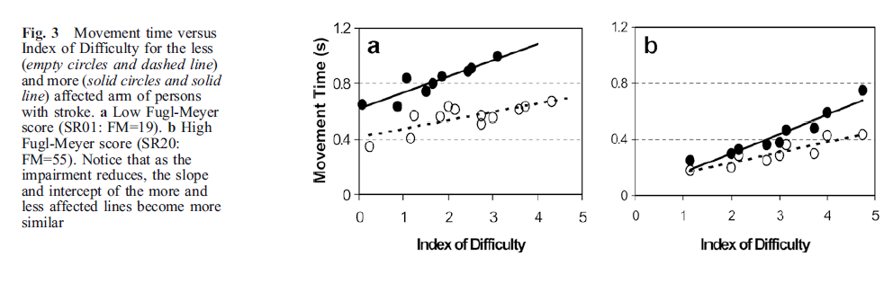
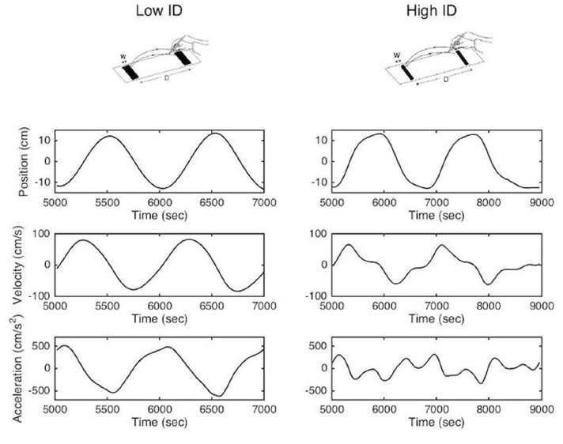
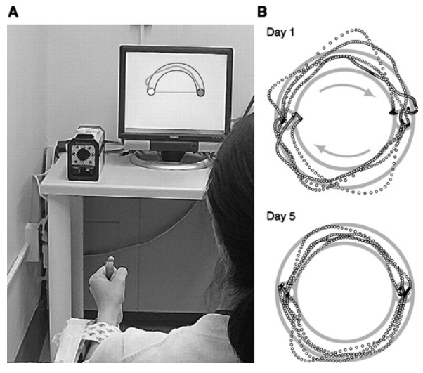
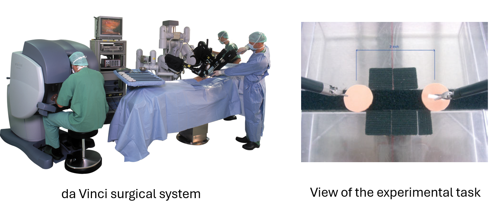

Study
Temprado et al. (2013)
Having established Fitts’ and Schmidt’s laws and the two-phase structure of goal-directed movement, we now examine how these principles are applied in published research — first to characterize altered motor control in clinical populations, and second to quantify the acquisition of a clinical motor skill.
These interactive lessons were built by Dr. Kuznetsov using AI tools, with extensive input from and review by the instructor, who is responsible for their content and accuracy.
Each case study that follows can be understood through the two-component structure of a rapid aiming movement (Woodworth, 1899): an initial impulse and a homing phase.
Flip each phase to review what it contributes.
Against this background, the speed–accuracy principles are applied in two distinct ways:
Speed–accuracy analysis as a window on impaired motor control
When neurological disease or aging alters movement, the change is rarely random. Because Fitts’ and Schmidt’s laws describe lawful relationships between speed, difficulty, and error, deviations from those relationships are informative: a changed slope or intercept, an increase in corrective submovements, or greater endpoint variability each points toward a specific component of control.
A deficit in the initial impulse (feedforward planning and force scaling) produces a different signature from a deficit in the homing phase (feedback-based correction). The three cases that follow — aging, stroke, and Parkinson’s disease — illustrate each pattern.
This page examines the detailed kinematics of the end-effector — the hand or fingertip — as it travels from a start position to a target. Recording it over time yields three linked traces — position, velocity, and acceleration — which are all views of the same movement. Set the controls, then press Play to watch the end-effector travel while all three traces advance in step.
Rises from the start and settles at the target. A smooth, single S-shaped rise indicates one clean movement; corrective submovements appear as small steps near the end.
The most informative trace. The large initial peak is the ballistic primary submovement (the initial impulse); each smaller later peak is a corrective submovement in the homing phase.
The positive acceleration lobe is the force that launches the limb; the negative deceleration lobe is braking and online correction. Each corrective submovement adds its own small acceleration–deceleration pair.
Splitting a reach into an acceleration (launch) phase and a deceleration (homing) phase is exactly how the aging study on the next screen localizes where older adults spend their extra time.
Interactive reconstruction after Meyer, D. E., Abrams, R. A., Kornblum, S., Wright, C. E., & Smith, J. E. K. (1988). Optimality in human motor performance: Ideal control of rapid aimed movements. Psychological Review, 95(3), 340–370. https://doi.org/10.1037/0033-295X.95.3.340
Older adults can be as accurate as younger adults but typically require more time. Critically, Fitts’ law is preserved — the logarithmic scaling of movement time with difficulty remains intact. What changes is the control of the movement, particularly its feedback-dependent phase.
Using the acceleration–deceleration decomposition from the previous screen, Temprado et al. (2013) separated each reach into its acceleration phase (feedforward force generation, launching the limb) and its deceleration phase (closed-loop, online correction onto the target).
At matched task difficulty, movement times were longer in older adults, while the lawful Fitts’ relationship between movement time and difficulty was retained.
The additional movement time was due disproportionately to the deceleration (homing) phase, and increasingly so as accuracy demands rose. Older adults spend proportionally more of the movement in feedback-guided correction.
A decrease in information-processing capacity is currently considered the origin of age-related slowing of cognitive and motor behaviors (Welford et al., 1969; Birren et al., 1980; Cerella, 1985; Salthouse et al., 1996; Bashore et al., 1997). In a Fitts’ task, that reduced capacity shows up where processing demand is highest — the feedback-guided homing phase.
Slowness in aging reflects increased reliance on the corrective homing phase, not a failure of targeting. Accuracy is maintained but at the cost of increased time.
Temprado, J.-J., Sleimen-Malkoun, R., Lemaire, P., Rey-Robert, B., Retornaz, F., & Berton, E. (2013). Aging of sensorimotor processes: a systematic study in Fitts’ task. Experimental Brain Research, 228(1), 105–116. https://doi.org/10.1007/s00221-013-3542-0
Reaching with the more-affected arm after stroke is characteristically slow, segmented, and indirect. McCrea and Eng (2005) used Fitts’ law to quantify this, attributing it to increased neuromotor noise — a reduced capacity to transmit motor commands.
Typical, well-controlled movement
One bell-shaped peak — a single ballistic impulse lands on target.
Characteristic of the affected arm after stroke
A smaller main peak followed by several corrective submovements — the limb hunts onto the target.

The Fugl-Meyer Assessment is a standard clinical measure of post-stroke sensorimotor impairment. The upper-extremity motor section is scored out of 66; a higher score means less impairment (better motor function). Here it indexes how far the affected arm’s Fitts’ line sits above the less-affected arm’s.
Submovement count and smoothness, derived from the velocity profile, are quantitative markers of reaching recovery — a direct clinical application of the two-phase model.
McCrea, P. H., & Eng, J. J. (2005). Consequences of increased neuromotor noise for reaching movements in persons with stroke. Experimental Brain Research, 162(1), 70–77. https://doi.org/10.1007/s00221-004-2106-8 Velocity profiles shown are schematic illustrations, not recorded data.
Patients with Parkinson’s disease often have difficulty generating rhythmic movements and making movement adjustments to accuracy constraints (Fernandez et al., 2018) — precisely the demands of a Fitts’ task. A notable feature is that patients still obey Fitts’ law — the speed–accuracy relationship remains lawful — but the trade-off is shifted and more costly. Fernandez et al. (2018) examined this in a reciprocal aiming task, on and off dopaminergic medication.

Flip each finding to reveal what Fernandez and colleagues observed.
Parkinson’s disease illustrates that a condition can obey Fitts’ law while still performing worse: the line keeps its shape but shifts to longer movement times, and the reach fragments into more submovements. The clinical signal is in this overall slowing and fragmentation, not in any breakdown of the Fitts’ relationship itself.
Fernandez, L., Huys, R., Issartel, J., Azulay, J.-P., & Eusebio, A. (2018). Movement speed-accuracy trade-off in Parkinson’s disease. Frontiers in Neurology, 9, 897. https://doi.org/10.3389/fneur.2018.00897
The speed–accuracy function as a metric of skill acquisition
The same relationships that reveal impairment can also measure progress. Because a skilled performer is both faster and more accurate than a novice, the speed–accuracy function provides an objective, quantitative index of how far a trainee has advanced — one that does not depend on subjective rating.
Learning is visible as a shift of the entire trade-off function, and as reduced variability for a given speed. The two cases that follow apply this idea first in a controlled laboratory task, then in robot-assisted surgical training.
Shmuelof, Krakauer, and Mazzoni (2012) proposed that this shift is what motor-skill learning fundamentally is — a “breaking through” of the current trade-off to move faster and more accurately, rather than exchanging one for the other.

The improvement arose largely from reduced trial-to-trial variability and greater smoothness; the mean path changed little but became far more consistent. In the authors’ words: “We found evidence for improved feedback control, which could explain the reduction in variability but does not preclude other explanations such as an increased signal-to-noise ratio in cortical representations.”
Shmuelof, L., Krakauer, J. W., & Mazzoni, P. (2012). How is a motor skill learned? Change and invariance at the levels of task success and trajectory control. Journal of Neurophysiology, 108(2), 578–594. https://journals.physiology.org/doi/full/10.1152/jn.00856.2011
The speed–accuracy framework extends directly to surgical skill. Chien et al. (2010) applied a Fitts’ task on the da Vinci surgical system, in which operators alternately touched targets of varying size and distance through the telemanipulator.

A significant linear relationship between movement time and index of difficulty was observed: as targets became smaller or more distant, operators slowed down to preserve accuracy. The robotic interface obeys the same law as free-limb movement.
The two groups fell on separate Fitts’ lines: trained operators were faster than novices at every level of difficulty. Because speed improves with experience while accuracy is held constant, the speed–accuracy relationship is a quantitative index of surgical proficiency and of progress along the learning curve.
An objective, Fitts’-based index lets a training program track skill acquisition and define competency without relying solely on expert judgement — the measurement logic of Case II applied to a modern clinical tool.
Chien, J. H., Tiwari, M. M., Suh, I. H., Mukherjee, M., Park, S.-H., Oleynikov, D., & Siu, K.-C. (2010). Accuracy and speed trade-off in robot-assisted surgery. The International Journal of Medical Robotics and Computer Assisted Surgery, 6(3), 324–329. https://doi.org/10.1002/rcs.336
Across five case studies, Fitts’ and Schmidt’s principles served two distinct clinical purposes, both read through the initial-impulse / homing-phase structure of movement.
Aging → more time in the feedback (deceleration) phase. Stroke → raised Fitts’ slope/intercept and a segmented, submovement-rich reach. Parkinson’s → the law holds, but with a costlier trade-off and more discrete submovements.
Laboratory learning → skill defined as a downward shift of the speed–accuracy function. Robotic surgery → Fitts’ law at the console provides an objective index of surgical proficiency and the learning curve.
Whether these methods are used to characterize a motor deficit or to assess the acquisition of a skill, the underlying approach is consistent: quantify the relationship among speed, task difficulty, and error, and interpret any departure from that relationship in terms of the two phases of goal-directed movement — the initial impulse and the feedback-guided homing phase.